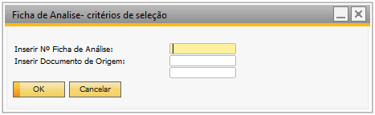
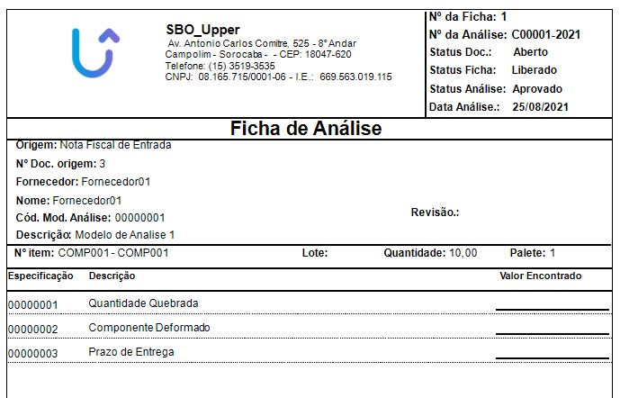

Relatório Ficha de Análise
Este relatório retorna as informações de uma determinada ficha de análise, o retorno é feito de acordo com os filtros selecionados.
Inserir Nº Ficha de Análise: Define o número da ficha de análise.
Inserir Documento de Origem: Define o documento de origem da ficha de análise.
Exemplo de retorno de relatório:
